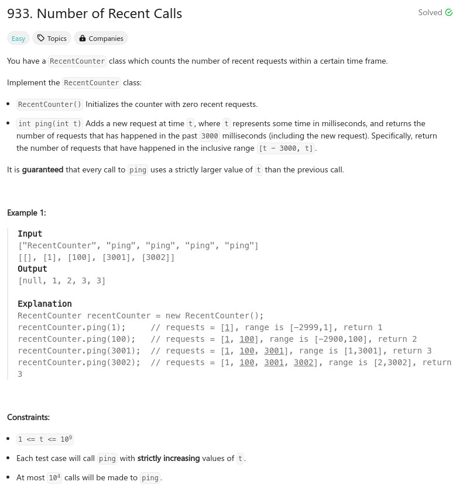

題目：

typedef struct {
int *ping;
int cnt;
} RecentCounter;
RecentCounter* recentCounterCreate()
{
#define MAX_PING_SIZE 10000
RecentCounter *r = malloc(sizeof(RecentCounter));
r->ping = malloc(sizeof(int) * MAX_PING_SIZE);
r->cnt = 0;
return r;
}
int recentCounterPing(RecentCounter* obj, int t)
{
#define PING_TIME 3000
int cc = 0;
int cnt = 0;
int min = t - PING_TIME;
for (cc = 0; cc < obj->cnt; cc++) {
if (obj->ping[cc] >= min) {
cnt += 1;
}
}
cnt += 1;
obj->ping[obj->cnt++] = t;
return cnt;
}
void recentCounterFree(RecentCounter* obj)
{
free(obj->ping);
obj->ping = NULL;
}